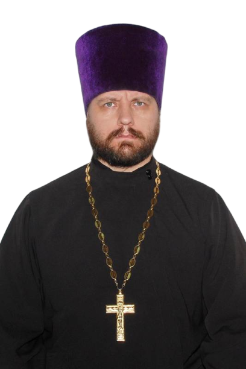
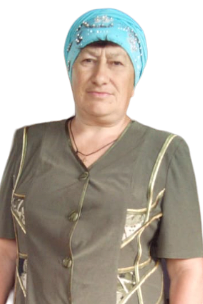

Храм Архангела
Михаила


История храма
Постройка каменного храма в честь Введения Пресвятой Богородицы была завершена в начале XIX века, в 1803 году. Храм был построен на средства благотворителей-сельчан. Действовал до конца двадцатых годов ХХ века, но вскоре был закрыт и передан под зернохранилище. В 53 году XX века был разрушен по решению местной власти. В 2010 году построен и освящен храм в честь Архистратига Божия Михаила.

Настоятель Храма
Отец Игорь Подопригорин с 2016 года назначен настоятелем храма Архистратига Божия Михаила села Воробьёвка Воробьёвского района. Подопригорин Игорь Алексеевич доступен для связи по следующим контактам: +7 905 652-54-25

Староста Храма
На протяжении многих годов староста занимается организацией внутри храмовой деятельности. Глушкова Мария Михайловна доступна для связи по следующим контактам: +7 950 775-59-85
Храм на карте